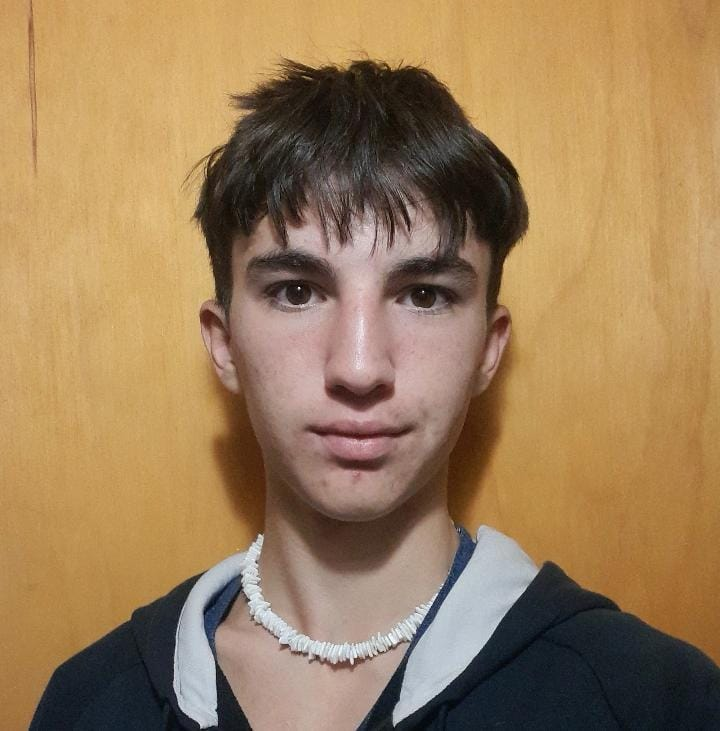

Otamendi Augusto

Datos Personales
- Tengo 18 años y me gusta programar. En mi tiempo libre estudio programación con cursos avanzados, para poder progresar como programador.
- DNI:*******
- Teléfono: *******
- Fecha de nacimiento: *****
- Edad: 18 años
- Estado civil: Casado
- Número de CUIL: *******
- Correo electronico: Titootamendi@gmail.com
Estudios Cursados
- Educación primaria, Escuela 129
- Educación secundaria, tecnologico del Sur, Tecnico en electronica
Conocimientos
Taller
- En este ámbito de “taller” aprendí Electricidad, Carpintería, Herrería, Soldadura y forja.
Como proyectos de estas materias arme un banquillo escalera (madera), un sistema eléctrico de una casa, una vinoteca de fierros y una llave Alen múltiple.
Programacion
- Aprendí a programar Arduino, Pyton, C#, My sql y HTML.
Todos estos lenguajes los utilice para distintos proyectos, como autos automáticos o bases de datos para una biblioteca.
Actividades fuera de la escuela
- Participante de charla TED sobre Medicina publica, también en un proyecto sobre Políticas Públicas para mejorar la opción de empleo para las personas con discapacidad.
Participante del desafío Eco YPF y en la copa robótica 2021.
Cursos de programación, programador de Phyton.
Experiencia Laboral
-
Lugar de trabajo 1
- En el verano trabaje construyendo cabañas, su infraestructura, instalación eléctrica y diseño de la misma.
- 01/11/2022 - 20/01/2023
- Fernando
Descargar en formato de Word